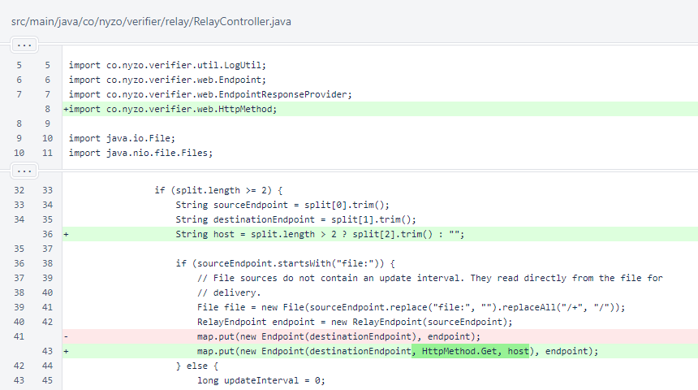
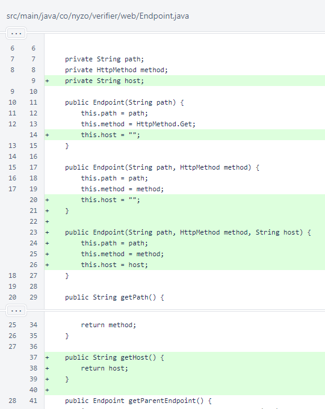
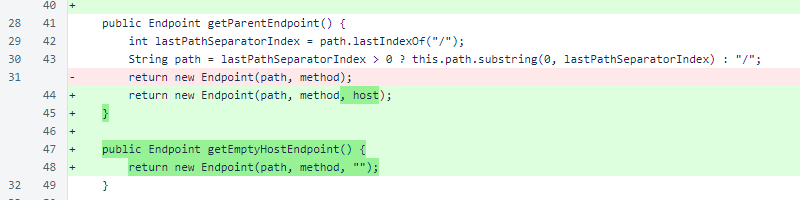
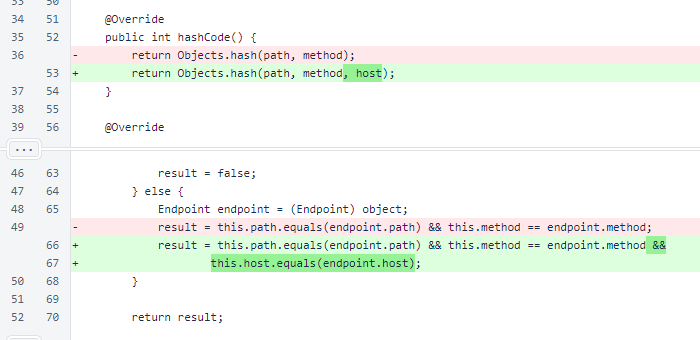
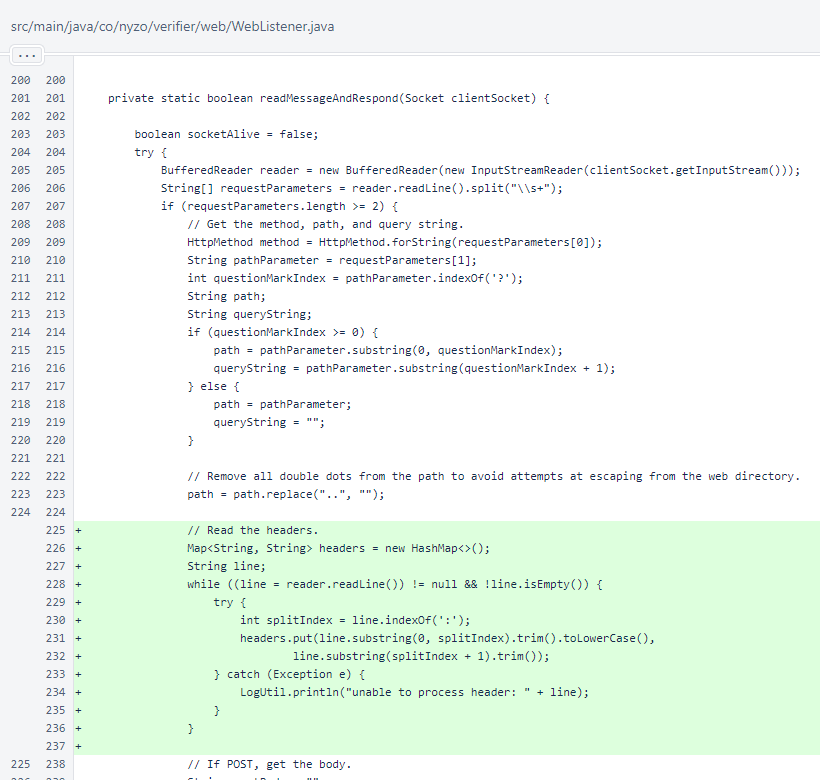
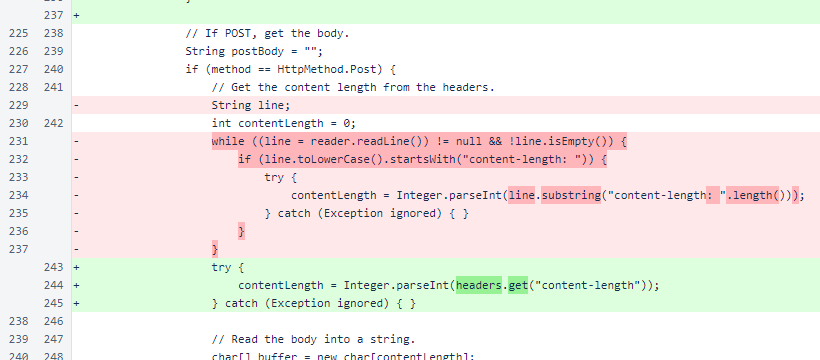
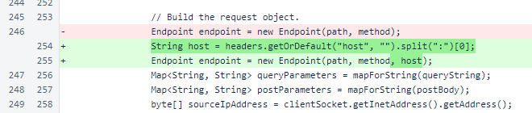
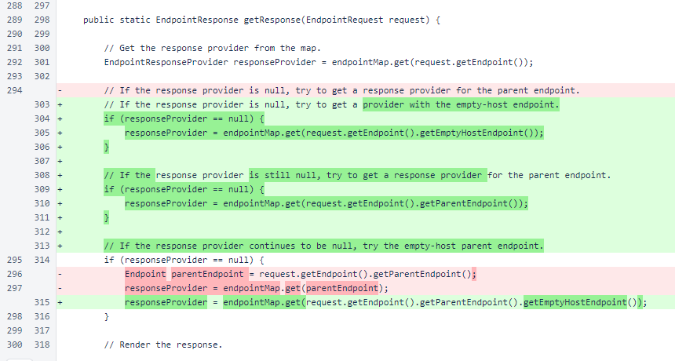

Nyzo 626: relay virtual hosting
Nyzo version 626
(commit on GitHub) adds virtual hosting capability to the relay server.
This version affects the relay server.
In RelayController, the host parameter is now read from the relay endpoints file
if provided. An endpoint with an empty host parameter serves as a fallback for all requests, while an endpoint with
a specified host parameter takes precedence for the specified host only.

The host field was added to the Endpoint class.

In the Endpoint.getParentEndpoint() method, the
host field is now passed to the constructor for the parent.
The new Endpoint.getEmptyHost() method produces a copy of an
Endpoint with the host field erased to the empty string.

The host is now considered in Endpoint.hashCode() and
Endpoint.equals().

In WebListener.readMessageAndRespond(), the headers from the web
request are now read into a Map.

For POST requests, the content-length header is now read
from the headers map.

The host header is now used in building the Endpoint for
requests.

In the WebListener.getResponse() method, the
host of the Endpoint is now considered. Matching is
performed according to the following priority:
- matching path, matching host
- matching path, empty host
- matching parent path, matching host
- matching parent path, empty host
